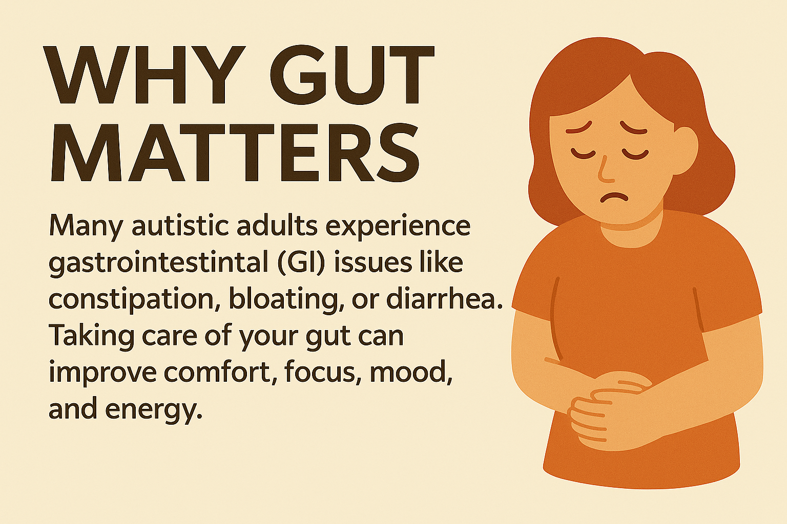

Health
Eat food. Not too much. Mostly plants. -Michael Pollan
Why Gut Matters

Many autistic adults experience gastrointestinal (GI) issues like constipation, bloating, or diarrhea. Taking care of your gut can improve comfort, focus, mood, and energy.
Hydration: The First Step to Gut Health
- Why it matters: Water helps food move smoothly through your gut.
- Daily goal: Aim for 6-8 cups (or more if you are being active or feeling hot)
- Tips:
- Carry a water bottle.
- Flavor water with fruit or herbs.
- Try herbal teas or seltzer if plain water is hard to drink
Fiber: For Regular Bowel Movements
- What it does: Helps prevent constipation and feeds good gut bacteria.
- Daily goal: 25-30g of fiber.
- Fiber-rich foods:
- Fruits (berries, pears, apples with skin)
- Vegetables (broccoli, carrots, leafy greens)
- Whole grains (oats, brown rice, quinoa)
- Beans, lentils, and seeds (chia, flaxseed)
- Go slow: Increase fiber gradually and drink more water.
Healthy Fats: Calm the Gut & Brain
- Why they help: Support brain and gut function, reduce inflammation.
- Sources:
- Avocados
- Olive Oil
- Fatty Fish (salmon, sardines)
- Nuts & seeds (Walnuts, flax, chia)
Magnesium: Soothing Mineral for Gut & Mood
- Why it helps: Can ease constipation, support relaxation, and reduce anxiety.
- Sources:
- Pumpkin seeds, almonds, cashews
- Spinach, black beans
- Whole grains (brown rice, oatmeal)
- Supplements: Magnesium citrate is gentle on the stomach and may relieve constipation - check with Registered Dietitian or Doctor first.
Vitamin C: Antioxidant & Gentle Support
- Why it helps: Supports the immune and may ease mild constipation.
- Sources:
- Oranges, strawberries, kiwi
- Bell peppers, tomatoes, broccoli
- Supplements: Powders or chewables are easy options, ask your Registered Dietitian or Doctor about your best dose.
Supplements to Consider for Gut Support

Check with your healthcare provider before starting any supplement. These can be helpful for many autistic adults with sensitive GI systems:
Probiotics
- What they do: Add "good" bacteria to support gut balance.
- Tips:
- Choose multi-strain formulas.
- Yogurt and kefir also contain live cultures.
Aloe Vera Juice
- What it may help with: Mild constipation, gut inflammation, and soothing the digestive lining.
- Tip: Look for decolorized, purified aloe vera juice (without aloin). Start with a small amount (1-2 oz/day).
Digestive Enzymes
- What they do: Help break down food more effectively and reduce bloating or discomfort.
- When to use: Take with meals, especially if you notice symptoms after eating certain foods (like dairy, gluten, or high-fat meals).
Final Tips
- Routine helps: Try eating meals at the same time each day.
- Textures matter: Choose foods that feel comfortable to eat.
- Start small: Add one new habit at a time.
- Track symptoms: Keep a food and gut journal if helpful.
When to Get Help
If you're having ongoing stomach pain, constipation, or discomfort, talk to a doctor or registered dietitian for personalized support.
Megan Martin, RDN, LDN